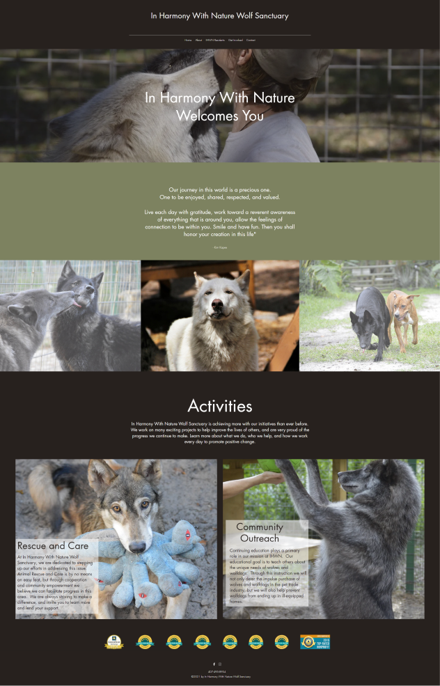
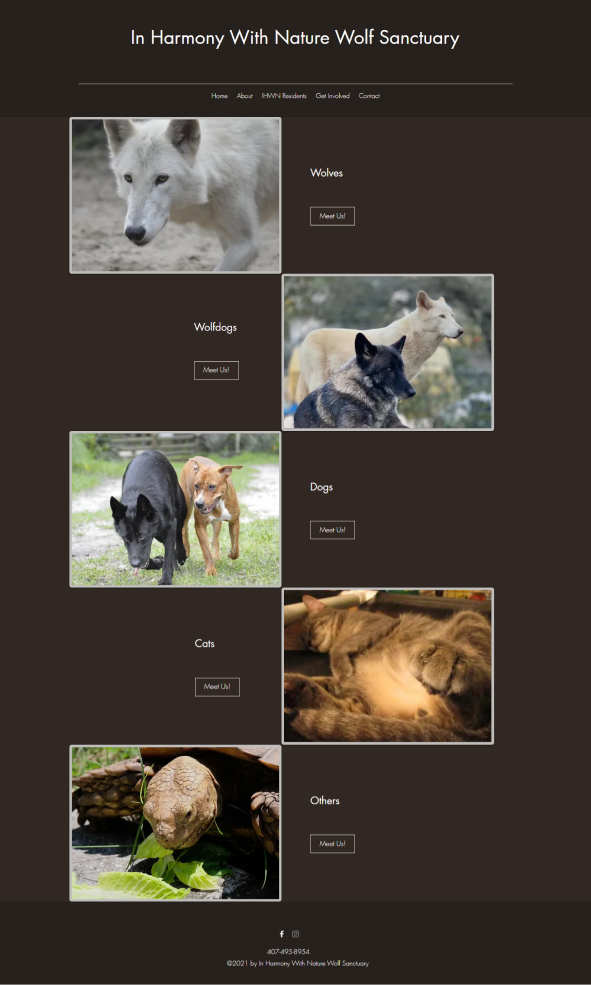
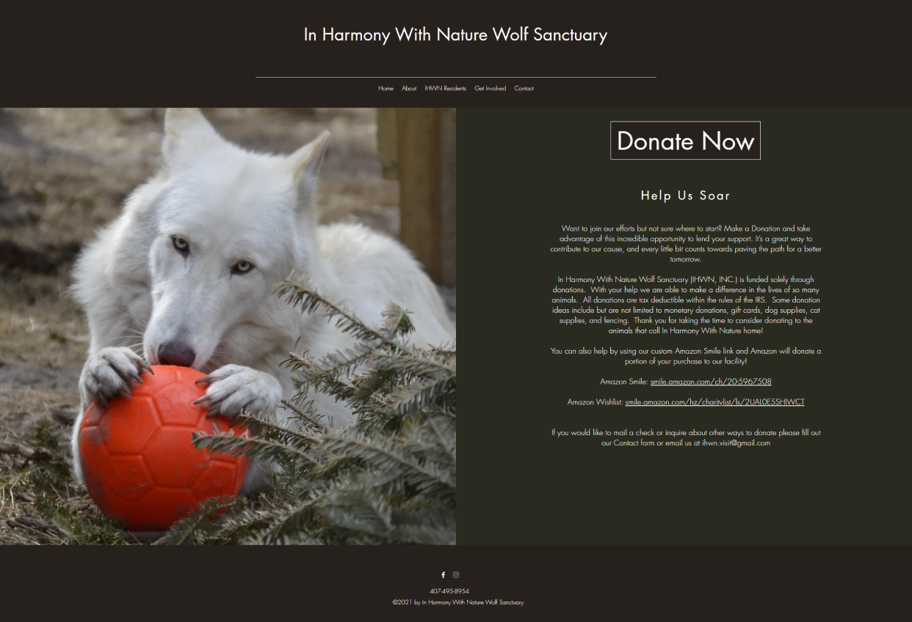
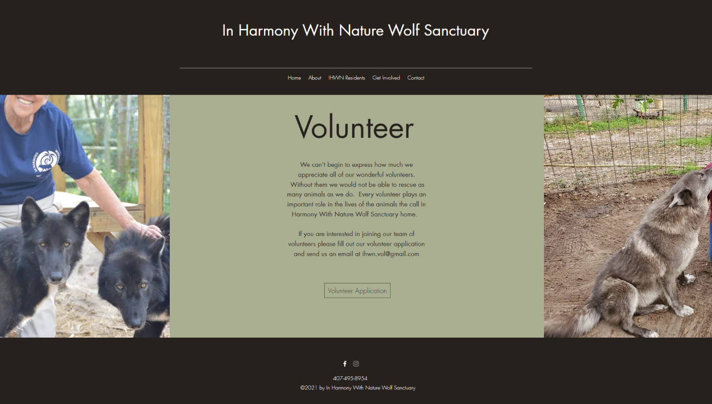

The existing layout of the page may not be the most optimal in regards to the best way to display their cause while also incentivizing donations.
Website viewers and potential donors need to be able to find the donation feature more clearly while also highlighting the user with more incentive and reasons to donate to this cause.
What our redesign is about
We were searching through nonprofit organizations and decided as a group to redesign the In Harmony With Nature website. We felt as if we could highlight some of their key information in a more efficient manner and made it our goal to try and make the website more visually appealing and user-friendly.
Our Redesign focus and Key Issues
Coming up with a new color palette for the website
Drawing more attention to the Donate section
Providing the user with more information regarding the Sanctuary
Improving the volunteer application form
Original Pages Before Redesign
Desktop Website
Home Page

Residents Page

Donate Page

Volunteer Page

Mobile Pages
User Research
We conducted 12 interviews with people from all different backgrounds and gathered their insight on how they felt about the original website layout and design.
Research Insights
Those considering donating would need more information about the charity than is currently presented on the page.
Those who would like to volunteer would also need more information than provided as well as a web based volunteer form.
Photos are a great way to showcase the animals. Showcase other animals as well
Users not sure how the sanctuary helps in the community.